Môi trường và hậu xử lý
Godot 4 cung cấp resource Environment được thiết kế lại, cùng với một hệ thống hậu xử lý mới với nhiều hiệu ứng có sẵn ngay lập tức.
Ghi chú
Kể từ Godot 4, các cài đặt hiệu năng/chất lượng của Environment được định nghĩa trong cài đặt dự án thay vì trong resource Environment. Điều này giúp điều chỉnh toàn cục dễ dàng hơn, vì bạn không còn phải tinh chỉnh từng resource Environment riêng lẻ để phù hợp với các cấu hình phần cứng khác nhau.
Lưu ý rằng hầu hết các cài đặt hiệu năng/chất lượng của Environment chỉ hiển thị sau khi bật nút gạt Advanced trong Project Settings.
Environment
Resource class_Environment lưu trữ tất cả thông tin cần thiết để điều khiển môi trường kết xuất 2D và 3D. Bao gồm bầu trời, ánh sáng môi trường (ambient lighting), tone mapping, các hiệu ứng và điều chỉnh. Tự nó không làm gì cả, nhưng bạn có thể kích hoạt nó bằng cách dùng nó ở một trong các vị trí sau, theo thứ tự ưu tiên:
Node Camera3D (ưu tiên cao)
Có thể gán một Environment cho node Camera3D. Nó sẽ được ưu tiên hơn mọi cài đặt khác.
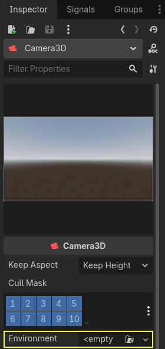
Cách này chủ yếu hữu ích khi bạn muốn ghi đè một môi trường hiện có, nhưng nhìn chung nên dùng tùy chọn bên dưới.
Node WorldEnvironment (ưu tiên trung bình, khuyến nghị)
Node WorldEnvironment có thể được thêm vào bất kỳ scene nào, nhưng mỗi cây scene đang hoạt động chỉ được có một node. Thêm nhiều hơn một sẽ gây ra cảnh báo.
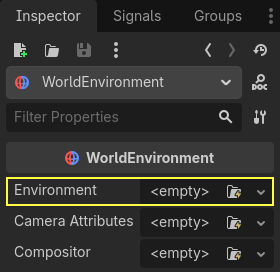
Bất kỳ Environment nào được thêm vào đều có mức ưu tiên cao hơn Environment mặc định (giải thích bên dưới). Điều này có nghĩa là nó có thể bị ghi đè theo từng scene, khiến nó khá hữu ích.
Môi trường và mặt trời xem trước (ưu tiên thấp)
Ghi chú
Kể từ Godot 4, hệ thống môi trường và mặt trời xem trước thay thế tệp default_env.tres từng được dùng trong các dự án Godot 3.
Nếu không có node WorldEnvironment hoặc node DirectionalLight3D nào trong scene hiện tại, trình chỉnh sửa sẽ hiển thị môi trường và mặt trời xem trước thay thế. Có thể tắt tính năng này bằng các nút ở phía trên trình chỉnh sửa 3D:
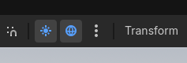
Nhấn vào 3 dấu chấm dọc ở bên phải sẽ hiển thị một hộp thoại cho phép bạn tùy chỉnh giao diện của môi trường xem trước:
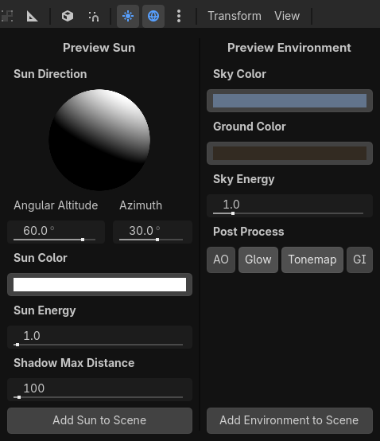
Mặt trời và bầu trời xem trước chỉ hiển thị trong trình chỉnh sửa, không hiển thị trong dự án đang chạy. Dùng các nút ở cuối hộp thoại, bạn có thể thêm mặt trời và bầu trời xem trước vào scene dưới dạng node.
Mẹo
Nếu bạn giữ Shift trong khi nhấn Add Sun to Scene hoặc Add Environment to Scene trong trình chỉnh sửa môi trường xem trước, thao tác này sẽ thêm cả mặt trời và môi trường xem trước vào scene hiện tại (như thể bạn đã nhấn cả hai nút riêng lẻ). Hãy dùng cách này để tăng tốc việc thiết lập dự án và tạo nguyên mẫu.
Thuộc tính camera
Ghi chú
Trong Godot 4, thông tin về độ phơi sáng (exposure) và độ sâu trường ảnh (depth of field) được tách khỏi resource Environment sang một resource CameraAttributes riêng. Điều này cho phép điều chỉnh các thuộc tính đó độc lập với các cài đặt Environment khác dễ dàng hơn.
Resource class_CameraAttributes lưu trữ thông tin về độ phơi sáng và độ sâu trường ảnh. Nó cũng cho phép bật tính năng tự động điều chỉnh độ phơi sáng theo độ sáng của scene.
Có hai loại resource CameraAttribute:
CameraAttributesPractical: Các tính năng được cung cấp bằng đơn vị tùy ý, dễ hình dung hơn cho hầu hết các trường hợp sử dụng trong game.
CameraAttributesPhysical: Các tính năng được cung cấp bằng đơn vị thực tế, tương tự máy ảnh kỹ thuật số. Ví dụ, góc nhìn (field of view) được đặt bằng tiêu cự tính theo milimét thay vì giá trị tính theo độ. Được khuyến nghị khi độ chính xác vật lý là quan trọng, chẳng hạn cho kết xuất chân thực.
Cả hai loại resource CameraAttribute đều cho phép bạn dùng các tính năng giống nhau, nhưng được cấu hình khác nhau. Nếu bạn không biết chọn loại nào, hãy dùng CameraAttributesPractical.
Ghi chú
Dùng class_CameraAttributesPhysical trên node Camera3D sẽ khóa việc điều chỉnh FOV và tỷ lệ khung hình trong Camera3D đó, vì góc nhìn được điều chỉnh trong resource CameraAttributesPhysical. Nếu được dùng trong WorldEnvironment, CameraAttributesPhysical sẽ không ghi đè bất kỳ Camera3D nào trong scene.
Có thể thêm resource CameraAttributes vào node Camera3D hoặc WorldEnvironment. Khi camera hiện tại có CameraAttributes được đặt, nó sẽ ghi đè CameraAttributes được đặt trong WorldEnvironment (nếu có).
Trong hầu hết các tình huống, nên đặt resource CameraAttributes trên node Camera3D thay vì WorldEnvironment. Khác với WorldEnvironment, việc gán resource CameraAttributes cho node Camera3D sẽ ngăn độ sâu trường ảnh hiển thị trong viewport của trình chỉnh sửa 3D, trừ khi camera đang được xem trước.
Tùy chọn môi trường
Dưới đây là mô tả chi tiết về tất cả các tùy chọn môi trường và cách chúng được dự định sử dụng.
Hình nền
Mục Background chứa các cài đặt về cách tô nền (những phần màn hình không có đối tượng nào được vẽ). Nền không chỉ có mục đích hiển thị một hình ảnh hay màu sắc. Theo mặc định, nó còn ảnh hưởng tới cách các đối tượng chịu tác động của ánh sáng môi trường và ánh sáng phản xạ. Điều này được gọi là chiếu sáng dựa trên hình ảnh (image-based lighting - IBL).
Do đó, bầu trời nền có thể ảnh hưởng lớn tới diện mạo tổng thể của scene, ngay cả khi bầu trời không bao giờ hiển thị trực tiếp trên màn hình. Cần lưu ý điều này khi tinh chỉnh chiếu sáng trong scene.
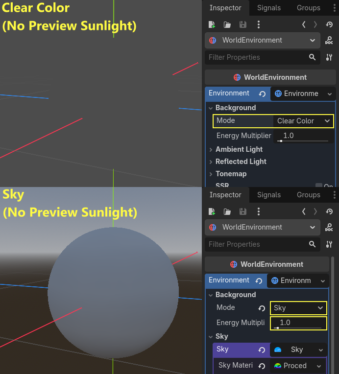
Có một số chế độ nền có sẵn:
Clear Color dùng màu xóa (clear color) mặc định được định nghĩa trong cài đặt dự án. Nền sẽ là một màu cố định.
Custom Color giống Clear Color nhưng với giá trị màu tùy chỉnh.
Sky cho phép bạn định nghĩa một sky material làm nền (xem bên dưới). Theo mặc định, các đối tượng trong scene sẽ phản chiếu sky material này và hấp thụ ánh sáng môi trường từ nó.
Canvas hiển thị scene 2D làm nền cho scene 3D. Có thể dùng điều này để các hiệu ứng môi trường hiển thị trên kết xuất 2D, chẳng hạn glow trong 2D.
Keep không vẽ bầu trời nào, thay vào đó giữ lại những gì có ở các frame trước. Điều này cải thiện hiệu năng trong các scene hoàn toàn trong nhà, nhưng sẽ tạo ra lỗi hình ảnh "phòng gương" nếu bầu trời hiển thị vào bất kỳ lúc nào.
Camera Feed hiển thị một class_CameraFeed từ camera vật lý làm nền, hữu ích cho các game AR trên thiết bị di động.
Sky material
Khi dùng chế độ nền Sky (hoặc chế độ ánh sáng môi trường/phản xạ được đặt là Sky), một subresource Sky sẽ có thể chỉnh sửa trong resource Environment. Chỉnh sửa subresource này cho phép bạn tạo một resource SkyMaterial bên trong Sky.
Có 3 sky material tích hợp sẵn để lựa chọn:
PanoramaSkyMaterial: Dùng ảnh bầu trời toàn cảnh 360 độ (khuyến nghị tỷ lệ khung hình 2:1). Để tận dụng dải tần nhạy sáng cao (high dynamic range), ảnh toàn cảnh phải ở định dạng tương thích HDR như
.hdrhoặc.exrthay vì định dạng dải tần nhạy sáng tiêu chuẩn như.pnghoặc.jpg.ProceduralSkyMaterial: Dùng bầu trời được tạo theo thủ tục (procedural) với màu mặt đất, mặt trời, bầu trời và đường chân trời có thể điều chỉnh. Đây là loại bầu trời được dùng trong chế độ xem trước của trình chỉnh sửa. Vị trí mặt trời được tự động suy ra từ 4 node DirectionalLight3D đầu tiên có trong scene. Có thể có tối đa 4 mặt trời cùng lúc.
PhysicalSkyMaterial: Dùng bầu trời procedural dựa trên vật lý với các tham số tán xạ có thể điều chỉnh. Vị trí mặt trời được tự động suy ra từ node DirectionalLight3D đầu tiên có trong scene. PhysicalSkyMaterial tốn kém hơn một chút khi kết xuất so với ProceduralSkyMaterial. Có thể có tối đa 1 mặt trời cùng lúc.
Ảnh bầu trời toàn cảnh đôi khi được gọi là HDRI (High Dynamic Range Images). Bạn có thể tìm các HDRI có giấy phép tự do trên Poly Haven.
Ghi chú
Texture HDR của PanoramaSkyMaterial có các điểm rất sáng (chẳng hạn ảnh chụp thực tế có mặt trời) có thể gây ra các đốm lấp lánh dễ thấy trên phản xạ ambient và specular. Nguyên nhân là độ phơi sáng đỉnh của texture quá cao.
Để khắc phục, hãy chọn texture toàn cảnh trong FileSystem dock, vào Import dock, bật HDR Clamp Exposure rồi nhấn Reimport.
Nếu bạn cần một sky material tùy chỉnh (ví dụ cho mây procedural), bạn có thể tạo một sky shader tùy chỉnh.
Ánh sáng môi trường (ambient light)
Ánh sáng môi trường (như được định nghĩa ở đây) là một loại ánh sáng ảnh hưởng tới mọi phần hình học với cùng cường độ. Nó mang tính toàn cục và độc lập với các nguồn sáng có thể được thêm vào scene. Ánh sáng môi trường là một trong hai thành phần của chiếu sáng dựa trên hình ảnh. Khác với ánh sáng phản xạ, ánh sáng môi trường không thay đổi theo vị trí và góc nhìn của camera.
Có một số loại ánh sáng môi trường (ambient light) để lựa chọn:
Background: Lấy ánh sáng môi trường từ nền, chẳng hạn bầu trời, màu tùy chỉnh hoặc clear color (mặc định). Cường độ ánh sáng môi trường sẽ thay đổi tùy theo nội dung ảnh bầu trời, có thể giúp ánh sáng môi trường đẹp mắt hơn. Phải đặt bầu trời làm nền thì chế độ này mới hiển thị.
Disabled: Không dùng ánh sáng môi trường. Hữu ích cho các scene hoàn toàn trong nhà.
Color: Dùng một màu cố định cho ánh sáng môi trường, bỏ qua bầu trời nền. Cường độ ánh sáng môi trường sẽ như nhau ở mọi phía, có thể khiến chiếu sáng của scene trông phẳng hơn. Hữu ích cho các scene trong nhà nơi bóng đổ đen kịt có thể quá tối, hoặc để tối đa hóa hiệu năng trên thiết bị cấu hình thấp.
Sky: Lấy ánh sáng môi trường từ một bầu trời được chỉ định, ngay cả khi nền được đặt ở chế độ khác Sky. Nếu chế độ nền đã là Sky, chế độ này hoạt động giống hệt Background.
Khi chế độ ánh sáng môi trường được đặt là Sky hoặc Background (và nền được đặt là Sky), có thể pha trộn giữa màu môi trường và bầu trời bằng thuộc tính Sky Contribution. Giá trị này mặc định là 1.0, nghĩa là chỉ dùng bầu trời môi trường. Màu môi trường bị bỏ qua trừ khi Sky Contribution được giảm xuống dưới 1.0.
Dưới đây là so sánh về cách các loại ánh sáng môi trường khác nhau ảnh hưởng tới một scene:
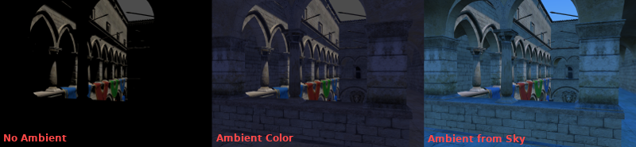
Cuối cùng, có cài đặt Energy đóng vai trò hệ số nhân. Nó hữu ích khi làm việc với HDR.
Nhìn chung, bạn chỉ nên dựa hoàn toàn vào ánh sáng môi trường cho các scene đơn giản hoặc không gian ngoài trời rộng lớn. Bạn cũng có thể làm vậy để tăng hiệu năng. Ánh sáng môi trường kết xuất nhanh, nhưng không mang lại chất lượng chiếu sáng tốt nhất. Tốt hơn là tạo ánh sáng môi trường từ ReflectionProbe, VoxelGI hoặc SDFGI, vì chúng mô phỏng cách ánh sáng gián tiếp lan truyền chính xác hơn. Dưới đây là so sánh về chất lượng giữa việc dùng một màu môi trường phẳng và VoxelGI:
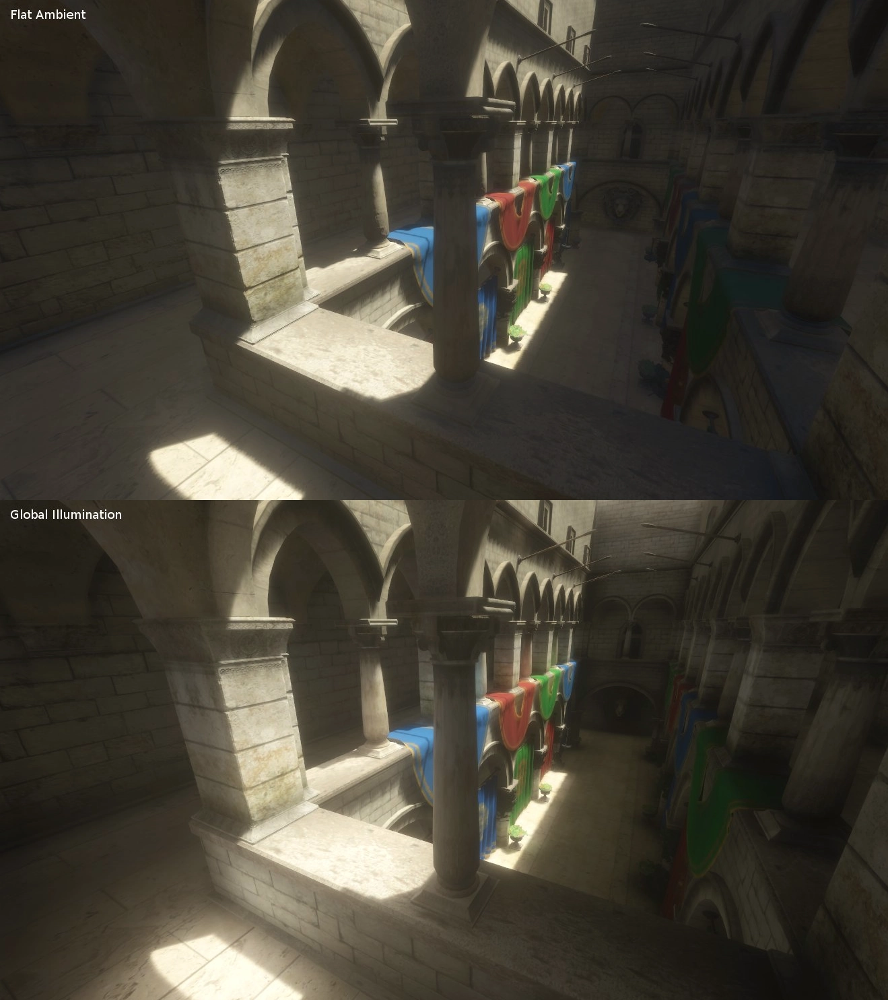
Dùng một trong các phương pháp được mô tả ở trên sẽ thay thế ánh sáng môi trường cố định bằng ánh sáng môi trường từ các probe.
Ánh sáng phản xạ
Ánh sáng phản xạ (còn gọi là ánh sáng specular) là thành phần còn lại trong hai thành phần của chiếu sáng dựa trên hình ảnh.
Ánh sáng phản xạ có thể được đặt ở một trong 3 chế độ:
Background: Phản xạ từ nền, chẳng hạn bầu trời, màu tùy chỉnh hoặc clear color (mặc định).
Disabled: Không phản xạ bất kỳ ánh sáng nào từ môi trường. Hữu ích cho các scene hoàn toàn trong nhà, hoặc để tối đa hóa hiệu năng trên thiết bị cấu hình thấp.
Sky: Phản xạ từ bầu trời nền, ngay cả khi nền được đặt ở chế độ khác Sky. Nếu chế độ nền đã là Sky, chế độ này hoạt động giống hệt Background.
Tonemap
Tonemap chọn thuật toán tonemapping sẽ được áp dụng cho scene, từ danh sách các thuật toán tiêu chuẩn được dùng trong ngành công nghiệp điện ảnh và game. Các chế độ tonemapping khác Linear được dùng để làm cho các vùng sáng và tối đồng đều hơn, đồng thời tránh hiện tượng cắt xén (clipping) ở các vùng sáng chói. Mỗi thuật toán có đặc tính hiệu năng khác nhau cần được cân nhắc khi chọn tonemapper.
Các tùy chọn tone mapping gồm:
Mode: Chế độ tonemapping được sử dụng.
Linear: Không sửa đổi dữ liệu màu, tạo ra đường cong tonemapping tuyến tính cắt xén các giá trị sáng một cách thiếu tự nhiên, khiến ánh sáng mạnh trông bị cháy sáng. Đây là tonemapper đơn giản và nhanh nhất.
Reinhard: Một đường cong tonemapping đơn giản làm dịu các giá trị sáng để tránh cắt xén. Kết quả là hình ảnh có thể trông nhạt và độ tương phản thấp. Chậm hơn Linear. Khi White để ở giá trị mặc định
1.0, Reinhard cho ra hình ảnh giống hệt Linear.Filmic: Dùng đường cong tonemapping kiểu phim để tránh cắt xén các giá trị sáng và cho độ tương phản tốt hơn Reinhard. Chậm hơn Reinhard một chút.
ACES: Dùng đường cong tonemapping kiểu phim có độ tương phản cao và giảm độ bão hòa của các giá trị sáng để có diện mạo chân thực hơn. Chậm hơn Filmic một chút.
AgX: Dùng đường cong tonemapping kiểu phim và giảm độ bão hòa của các giá trị sáng để có diện mạo chân thực hơn. Giữ sắc độ (hue) của màu khi chúng sáng lên tốt hơn các tonemapper khác. Đây là tùy chọn tonemapping chậm nhất.
Exposure: Điều chỉnh độ sáng của các giá trị trước khi chúng được đưa vào tonemapper. Giá trị Exposure cao hơn cho hình ảnh sáng hơn. Các giá trị được đưa vào tonemapper cũng sẽ được nhân với
2.0và1.8lần lượt cho Filmic và ACES để tạo độ sáng cảm nhận tương tự Linear.White: Giá trị tham chiếu trắng cho tonemapping, cho biết vị trí của màu trắng sáng trong thang giá trị được đưa vào tonemapper. Với chiếu sáng chân thực, giá trị khuyến nghị nằm trong khoảng
6.0đến8.0. Giá trị cao hơn giúp vùng sáng ít bị cháy sáng hơn, nhưng có thể làm scene trông có độ tương phản thấp hơn. White không khả dụng khi dùng Linear. Nếu bạn đang dùng AgX, trình kết xuất mobile và HDR 2D bị tắt, thì giá trị đặt ở đây sẽ bị bỏ qua và giá trị2.0sẽ được dùng thay thế.AGX Contrast: Chỉ khả dụng khi dùng AgX. Tăng giá trị này sẽ làm các giá trị tối tối hơn và các giá trị sáng sáng hơn. Nó cho kết quả tốt hơn tùy chọn contrast trong mục adjustment mà không tốn thêm chi phí hiệu năng.
Hiệu ứng trung gian và hậu xử lý
Resource Environment hỗ trợ nhiều hiệu ứng trung gian (mid-processing) và hậu xử lý phổ biến.
Ghi chú
Các hiệu ứng không gian màn hình như SSR, SSAO, SSIL và glow không hoạt động trên hình học nằm ngoài tầm nhìn của camera hoặc bị hình học đục khác che khuất. Hãy cân nhắc điều này khi tinh chỉnh các cài đặt của chúng để tránh những thay đổi gây xao nhãng trong khi chơi.
Phản xạ không gian màn hình (SSR)
Tính năng này chỉ khả dụng khi dùng trình kết xuất Forward+, không có trên Mobile hoặc Compatibility.
Dù Godot hỗ trợ nhiều nguồn dữ liệu phản xạ như Reflection probe, chúng có thể không cung cấp đủ chi tiết cho mọi tình huống. Phản xạ không gian màn hình hợp lý nhất trong các tình huống các đối tượng tiếp xúc với nhau (đối tượng trên sàn, trên bàn, nổi trên mặt nước, v.v.).
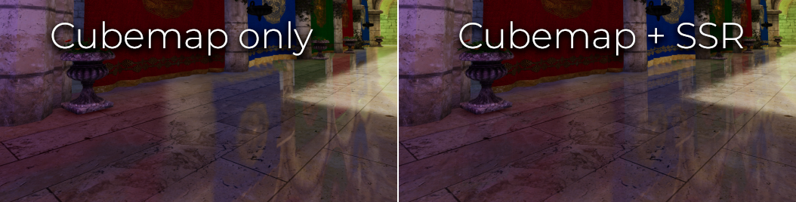
Không chỉ cho nhiều chi tiết hơn, phản chiếu không gian màn hình còn hoạt động theo thời gian thực (trong khi các loại phản chiếu khác thường được tính trước). Nhờ đó, nhân vật, xe cộ, v.v. có thể phản chiếu lên các bề mặt xung quanh khi di chuyển.
Phản chiếu không gian màn hình có thể được dùng cùng lúc với các nguồn phản chiếu khác để tận dụng phản chiếu chi tiết khi có thể, đồng thời vẫn có phương án dự phòng khi không thể dùng phản chiếu không gian màn hình (ví dụ: để phản chiếu các đối tượng nằm ngoài màn hình).
Có một vài tham số do người dùng điều khiển để tinh chỉnh kỹ thuật này tốt hơn:
Max Steps: Xác định độ dài tối đa của phản chiếu. Số này càng lớn thì chi phí tính toán càng cao.
Fade In: Cho phép điều chỉnh đường cong fade-in, hữu ích để làm vùng tiếp xúc mềm hơn.
Fade Out: Cho phép điều chỉnh đường cong fade-out, để giới hạn bước mờ dần một cách mượt mà.
Depth Tolerance: Có thể dùng để cho phép các tia không gian màn hình đi qua phía sau đối tượng. Khi xác định có thể đi qua phía sau một đối tượng hay không, các tia sẽ coi mỗi đối tượng như thể nó có độ sâu bằng giá trị này. Giá trị cao hơn sẽ khiến phản chiếu không gian màn hình ít bị "đứt gãy" hơn, nhưng đổi lại một số đối tượng sẽ tạo ra phản chiếu không chính xác về mặt vật lý.
Ngoài ra, bạn có thể điều chỉnh chất lượng SSR trong cài đặt dự án bằng cách bật/tắt Rendering > Environment > Screen Space Reflection > Half Size. Theo mặc định, phản chiếu không gian màn hình được kết xuất ở một nửa độ phân giải vì lý do hiệu năng. Tắt cài đặt này sẽ khiến hiệu ứng được kết xuất ở độ phân giải đầy đủ, giúp cải thiện chất lượng nhưng tăng mức sử dụng GPU.
Ghi chú
Lưu ý rằng phản chiếu không gian màn hình chỉ phản chiếu được hình học đục (opaque). Các material trong suốt sẽ không được phản chiếu vì chúng không ghi vào depth buffer. Điều này cũng áp dụng cho các shader dùng uniform hint_screen_texture hoặc hint_depth_texture.
Che khuất môi trường không gian màn hình (SSAO)
Tính năng này chỉ có khi dùng renderer Forward+ và Compatibility, không có trên Mobile.
Như đã đề cập trong phần Ambient, những vùng mà ánh sáng từ các node đèn không chiếu tới (do nằm ngoài bán kính hoặc bị che bóng) sẽ được chiếu bằng ánh sáng môi trường. Godot có thể mô phỏng điều này bằng VoxelGI, ReflectionProbe, Sky hoặc một màu môi trường cố định. Tuy nhiên, vấn đề là tất cả các phương pháp nêu trên đều tác động ở quy mô lớn (các vùng rộng) hơn là ở mức hình học nhỏ.
Màu môi trường cố định và Sky đều giống nhau ở mọi nơi, trong khi GI và Reflection probe có nhiều chi tiết cục bộ hơn, nhưng chưa đủ để mô phỏng những tình huống ánh sáng không thể lấp đầy bên trong các chi tiết rỗng hoặc lõm.
Điều này có thể được mô phỏng bằng Screen Space Ambient Occlusion. Như bạn thấy trong hình bên dưới, mục đích của nó là làm cho các vùng lõm tối hơn, mô phỏng lối đi hẹp hơn cho ánh sáng lọt vào:
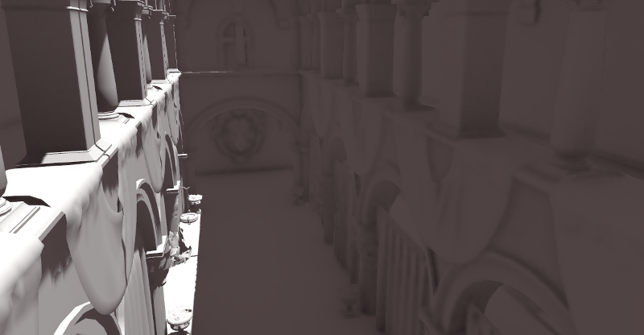
Một lỗi thường gặp là bật hiệu ứng này, bật một đèn rồi không thấy được tác dụng. Lý do là SSAO chỉ tác động lên ánh sáng môi trường. Nó không ảnh hưởng đến ánh sáng trực tiếp.
Đó là lý do trong hình trên, hiệu ứng ít rõ hơn dưới ánh sáng trực tiếp (bên trái). Nếu bạn muốn buộc SSAO hoạt động cả với ánh sáng trực tiếp, hãy dùng tham số Light Affect. Dù điều này không chính xác về mặt vật lý, một số họa sĩ vẫn thích vẻ ngoài của nó.
SSAO trông đẹp nhất khi kết hợp với một nguồn ánh sáng gián tiếp thực sự, như VoxelGI:
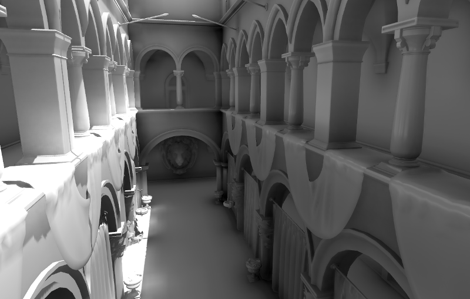
Có thể tinh chỉnh SSAO bằng một số tham số:
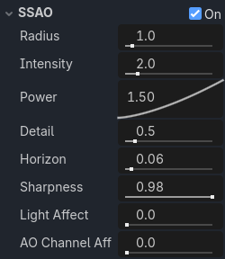
Radius: Khoảng cách mà tại đó các đối tượng có thể che khuất lẫn nhau khi tính toán che khuất môi trường không gian màn hình. Giá trị cao hơn sẽ tạo ra che khuất trên khoảng cách lớn hơn nhưng đổi lại hiệu năng và chất lượng.
Intensity: Cường độ chính của che khuất môi trường không gian màn hình. Đóng vai trò hệ số nhân cho hiệu ứng che khuất môi trường không gian màn hình. Giá trị cao hơn tạo ra che khuất tối hơn. Vì SSAO là hiệu ứng không gian màn hình, bạn nên giữ giá trị này ở mức vừa phải. SSAO quá mạnh có thể gây mất tập trung khi chơi.
Power: Sự phân bố của che khuất. Giá trị cao hơn tạo ra che khuất tối hơn, tương tự Intensity, nhưng suy giảm sắc nét hơn.
Detail: Đặt cường độ của mức chi tiết bổ sung cho hiệu ứng che khuất môi trường không gian màn hình. Giá trị cao làm lượt chi tiết nổi bật hơn, nhưng có thể góp phần gây răng cưa (aliasing) trong hình ảnh cuối cùng.
Horizon: Ngưỡng để xét một điểm trên bề mặt có bị che khuất hay không, được biểu diễn dưới dạng góc so với đường chân trời và ánh xạ vào khoảng 0.0-1.0. Giá trị 1.0 nghĩa là không có che khuất.
Sharpness: Mức độ mà hiệu ứng che khuất môi trường không gian màn hình được phép làm mờ qua các cạnh của đối tượng. Đặt quá cao sẽ gây răng cưa quanh cạnh đối tượng. Đặt quá thấp sẽ khiến cạnh đối tượng trông bị mờ.
Light Affect: Cường độ che khuất môi trường không gian màn hình dưới ánh sáng trực tiếp. Trong thực tế, che khuất môi trường chỉ áp dụng cho ánh sáng gián tiếp, nghĩa là không thể thấy hiệu ứng của nó dưới ánh sáng trực tiếp. Giá trị lớn hơn 0 sẽ khiến hiệu ứng SSAO hiển thị dưới ánh sáng trực tiếp. Giá trị trên
0.0không chính xác về mặt vật lý, nhưng một số họa sĩ thích hiệu ứng này.AO Channel Affect Cường độ che khuất môi trường không gian màn hình trên các material có định nghĩa texture AO. Giá trị lớn hơn
0.0sẽ khiến hiệu ứng SSAO hiển thị ở những vùng bị texture AO làm tối.
Ngoài ra, bạn có thể điều chỉnh chất lượng SSAO trong mục Rendering > Environment > SSAO của cài đặt dự án:
Quality: Đặt chất lượng của hiệu ứng che khuất môi trường không gian màn hình. Giá trị cao hơn lấy nhiều mẫu hơn nên cho chất lượng tốt hơn, nhưng đổi lại hiệu năng. Đặt giá trị này thành Ultra sẽ dùng cài đặt Adaptive Target (xem bên dưới).
Half Size: Nếu
true, che khuất môi trường không gian màn hình sẽ được kết xuất ở một nửa kích thước rồi phóng to trước khi được thêm vào scene. Cách này nhanh hơn đáng kể nhưng có thể bỏ sót các chi tiết nhỏ. Nếufalse, che khuất môi trường không gian màn hình sẽ được kết xuất ở kích thước đầy đủ.Adaptive Target: Mục tiêu chất lượng được dùng khi Quality được đặt thành Ultra. Giá trị
0.0cho chất lượng và tốc độ tương tự Medium, còn giá trị1.0cho chất lượng cao hơn nhiều so với mọi cài đặt khác nhưng đổi lại hiệu năng.Blur Passes: Số lượt làm mờ dùng khi tính toán che khuất môi trường không gian màn hình. Số cao hơn cho vẻ ngoài mượt hơn, nhưng tính toán chậm hơn và có ít chi tiết tần số cao hơn.
Fadeout From: Khoảng cách mà tại đó hiệu ứng che khuất môi trường không gian màn hình bắt đầu mờ dần. Dùng giá trị này để ẩn che khuất môi trường ở xa.
Fadeout To: Khoảng cách mà tại đó che khuất môi trường không gian màn hình mờ hẳn. Dùng giá trị này để ẩn che khuất môi trường ở xa.
Ghi chú
Kể từ Godot 4.6, renderer Compatibility có một phiên bản SSAO đơn giản hóa. Cách triển khai này có vẻ ngoài khác, nhưng sẽ chạy tốt hơn đáng kể trên thiết bị cấu hình thấp so với SSAO trong Forward+.
Khi dùng renderer Compatibility, chỉ có thể điều chỉnh tham số Radius và Intensity.
Chiếu sáng gián tiếp không gian màn hình (SSIL)
Tính năng này chỉ khả dụng khi dùng trình kết xuất Forward+, không có trên Mobile hoặc Compatibility.
SSIL cung cấp chiếu sáng gián tiếp cho các chi tiết nhỏ hoặc hình học động mà các kỹ thuật chiếu sáng toàn cục khác không bao quát được. Điều này áp dụng cho ánh sáng khuếch tán phản xạ, và cả các material phát sáng. Khi chỉ bật riêng SSIL, hiệu ứng có thể không quá rõ, và điều này là có chủ đích.
Thay vào đó, SSIL được dùng để bổ trợ cho các kỹ thuật chiếu sáng toàn cục khác như VoxelGI, SDFGI và LightmapGI. SSIL cũng cung cấp một hiệu ứng che khuất môi trường nhẹ, tương tự SSAO nhưng ít chi tiết hơn.
Tính năng này chỉ cung cấp chiếu sáng gián tiếp. Nó không phải là giải pháp chiếu sáng toàn cục đầy đủ. Điều này khiến nó khác với chiếu sáng toàn cục không gian màn hình (SSGI) mà các engine 3D khác cung cấp. SSIL có thể kết hợp với SSR và/hoặc SSAO để có chất lượng hình ảnh cao hơn (đổi lại hiệu năng).
Có thể tinh chỉnh SSIL bằng một số tham số:
Radius: Khoảng cách mà ánh sáng phản xạ có thể đi được khi dùng hiệu ứng chiếu sáng gián tiếp không gian màn hình. Giá trị lớn hơn sẽ khiến ánh sáng phản xạ đi xa hơn trong scene, nhưng có thể gây lỗi hình ảnh do lấy mẫu thiếu, trông như những gai dài bao quanh nguồn sáng.
Intensity: Hệ số nhân độ sáng cho hiệu ứng chiếu sáng gián tiếp không gian màn hình. Giá trị cao hơn cho ánh sáng sáng hơn.
Sharpness: Mức độ mà hiệu ứng chiếu sáng gián tiếp không gian màn hình được phép làm mờ qua các cạnh của đối tượng. Đặt quá cao sẽ gây răng cưa quanh cạnh đối tượng. Đặt quá thấp sẽ khiến cạnh đối tượng trông bị mờ.
Normal Rejection: Mức loại bỏ theo pháp tuyến (normal rejection) dùng khi tính toán chiếu sáng gián tiếp không gian màn hình. Normal rejection dùng pháp tuyến của một điểm mẫu để loại bỏ các mẫu quay mặt ra khỏi pixel hiện tại. Normal rejection là cần thiết để tránh rò rỉ ánh sáng khi chỉ một mặt của đối tượng được chiếu sáng. Tuy nhiên, có thể tắt normal rejection nếu muốn có rò rỉ ánh sáng, chẳng hạn khi scene chủ yếu chứa các đối tượng phát sáng từ những mặt không nhìn thấy được từ camera.
Ngoài ra, bạn có thể điều chỉnh chất lượng SSIL trong mục Rendering > Environment > SSIL của cài đặt dự án:
Quality: Đặt chất lượng của hiệu ứng chiếu sáng gián tiếp không gian màn hình. Giá trị cao hơn lấy nhiều mẫu hơn nên cho chất lượng tốt hơn, nhưng đổi lại hiệu năng. Đặt giá trị này thành Ultra sẽ dùng cài đặt Adaptive Target (xem bên dưới).
Half Size: Nếu
true, chiếu sáng gián tiếp không gian màn hình sẽ được kết xuất ở một nửa kích thước rồi phóng to trước khi được thêm vào scene. Cách này nhanh hơn đáng kể nhưng có thể bỏ sót các chi tiết nhỏ. Nếufalse, chiếu sáng gián tiếp không gian màn hình sẽ được kết xuất ở kích thước đầy đủ.Adaptive Target: Mục tiêu chất lượng được dùng khi Quality được đặt thành Ultra. Giá trị
0.0cho chất lượng và tốc độ tương tự Medium, còn giá trị1.0cho chất lượng cao hơn nhiều so với mọi cài đặt khác nhưng đổi lại hiệu năng. Khi dùng adaptive target, chi phí hiệu năng tăng theo độ phức tạp của scene.Blur Passes: Số lượt làm mờ dùng khi tính toán chiếu sáng gián tiếp không gian màn hình. Số cao hơn cho vẻ ngoài mượt hơn, nhưng tính toán chậm hơn và có ít chi tiết tần số cao hơn.
Fadeout From: Khoảng cách mà tại đó hiệu ứng chiếu sáng gián tiếp không gian màn hình bắt đầu mờ dần. Dùng giá trị này để ẩn chiếu sáng gián tiếp không gian màn hình ở xa.
Fadeout To: Khoảng cách mà tại đó chiếu sáng gián tiếp không gian màn hình mờ hẳn. Dùng giá trị này để ẩn chiếu sáng gián tiếp không gian màn hình ở xa.
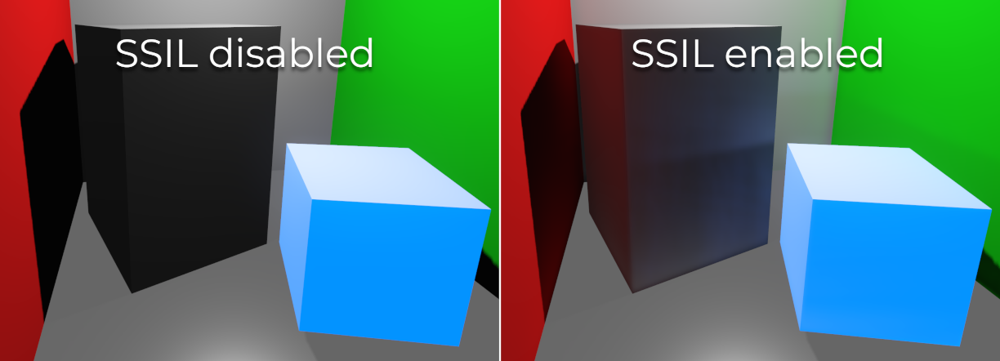
Chiếu sáng toàn cục bằng trường khoảng cách có dấu (SDFGI)
Tính năng này chỉ khả dụng khi dùng trình kết xuất Forward+, không có trên Mobile hoặc Compatibility.
Chiếu sáng toàn cục bằng trường khoảng cách có dấu (SDFGI) là một dạng chiếu sáng toàn cục theo thời gian thực. Nó không phải là hiệu ứng không gian màn hình, nghĩa là nó có thể cung cấp chiếu sáng toàn cục cho các phần tử nằm ngoài màn hình (khác với SSIL).
Xem thêm
Xem Chiếu sáng toàn cục bằng signed distance field (SDFGI) để biết hướng dẫn thiết lập kỹ thuật chiếu sáng toàn cục này.
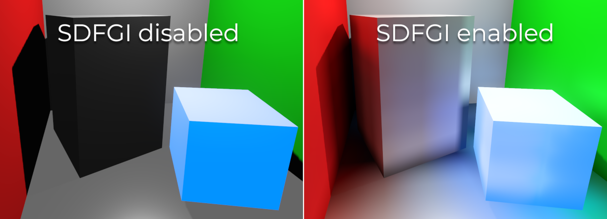
Glow (phát quang)
Ghi chú
Khi dùng phương thức kết xuất Compatibility, glow dùng một cách triển khai khác, với một số thuộc tính không khả dụng và bị ẩn khỏi Inspector: Levels, Normalized, Strength, Blend Mode, Mix, Map và Map Strength.
Cách triển khai này được tối ưu để chạy trên thiết bị cấu hình thấp nên kém linh hoạt hơn.
Trong nhiếp ảnh và điện ảnh, khi lượng ánh sáng vượt quá độ chói (độ sáng) tối đa mà phương tiện hỗ trợ, nó thường loang ra các vùng tối hơn của hình ảnh. Godot mô phỏng điều này bằng hiệu ứng Glow.
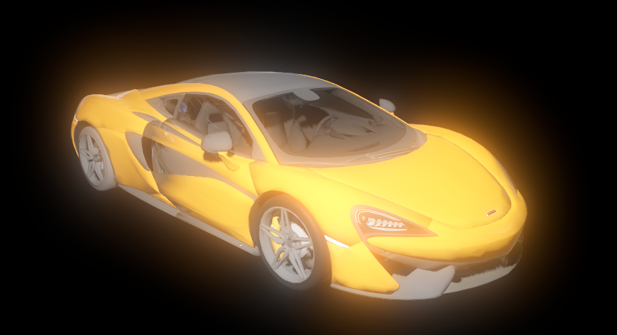
Theo mặc định, ngay cả khi hiệu ứng được bật, nó sẽ yếu hoặc không nhìn thấy. Cần xảy ra một trong hai điều kiện để nó thực sự hiển thị:
Ánh sáng trong một pixel vượt quá HDR Threshold (trong đó 0 là mọi ánh sáng đều vượt ngưỡng, còn 1.0 là ánh sáng vượt quá giá trị White của tonemapper). Thông thường, giá trị này được kỳ vọng là 1.0, nhưng có thể hạ thấp để nhiều ánh sáng loang ra hơn. Ngoài ra còn có một tham số bổ sung, HDR Scale, cho phép co giãn (làm sáng hơn hoặc tối hơn) phần ánh sáng vượt ngưỡng.
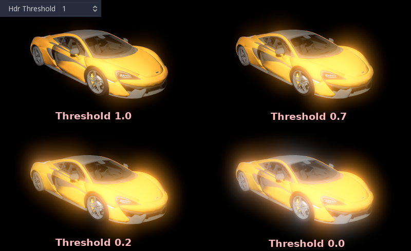
Thuộc tính Bloom có giá trị lớn hơn
0.0. Khi tăng lên, nó gửi toàn bộ màn hình vào bộ xử lý glow với lượng lớn hơn.
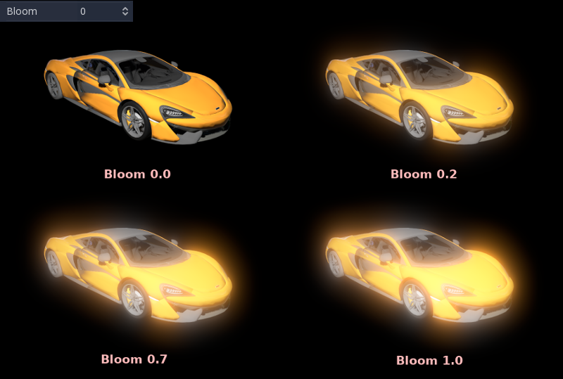
Cả hai đều khiến ánh sáng bắt đầu loang ra từ các vùng sáng hơn.
Khi glow đã hiển thị, có thể điều khiển nó bằng một vài tham số bổ sung:
Intensity là hệ số tổng thể cho hiệu ứng, có thể làm mạnh hơn hoặc yếu hơn (
0.0sẽ loại bỏ nó).Strength là mức độ mạnh khi xử lý kernel bộ lọc Gauss. Giá trị lớn hơn khiến bộ lọc bão hòa và lan rộng ra ngoài. Nhìn chung, không cần thay đổi giá trị này vì kích thước có thể được điều chỉnh hiệu quả hơn bằng Levels.
Cũng có thể thay đổi Blend Mode của hiệu ứng:
Additive là chế độ mạnh nhất, vì nó chỉ cộng hiệu ứng glow lên hình ảnh mà không có pha trộn. Nhìn chung, chế độ này quá mạnh để dùng, nhưng có thể trông đẹp khi kết hợp với Bloom cường độ thấp (tạo hiệu ứng như trong mơ).
Screen đảm bảo glow không bao giờ sáng hơn chính nó và hoạt động rất tốt cho mọi trường hợp.
Softlight là chế độ mặc định và yếu nhất, chỉ tạo ra một chút nhiễu màu tinh tế quanh các đối tượng. Chế độ này hoạt động tốt nhất trong các scene tối.
Replace có thể dùng để làm mờ toàn bộ màn hình hoặc để debug hiệu ứng. Nó chỉ hiển thị hiệu ứng glow mà không có hình ảnh bên dưới.
Mix pha trộn hiệu ứng glow với hình ảnh chính. Có thể dùng chế độ này để kiểm soát nghệ thuật tốt hơn. Hệ số pha trộn được điều khiển bởi thuộc tính Mix xuất hiện phía trên blend mode (chỉ khi blend mode được đặt thành Mix). Hệ số pha trộn cao sẽ khiến hình ảnh trông tối đi trừ khi tăng Bloom.
Để thay đổi kích thước và hình dạng hiệu ứng glow, Godot cung cấp Levels. Các level nhỏ là glow mạnh xuất hiện quanh đối tượng, còn các level lớn là glow mờ ảo phủ toàn màn hình:
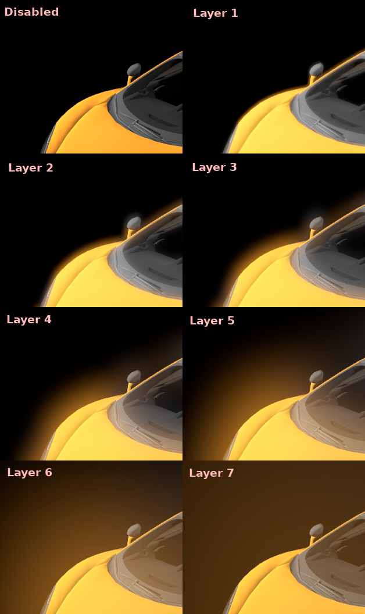
Tuy nhiên, sức mạnh thực sự của hệ thống này là kết hợp các level để tạo ra những mẫu glow thú vị hơn:
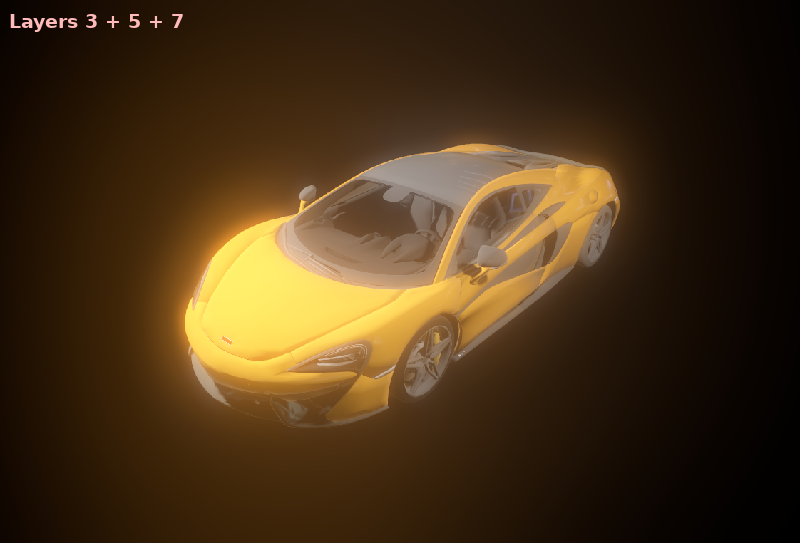
Cuối cùng, có thể điều khiển hiệu ứng glow bằng một glow map, tức là một texture xác định glow sáng đến mức nào trên từng phần của màn hình. Texture này có thể được tô màu (tùy chọn) để nhuộm hiệu ứng glow theo màu của glow map. Texture được kéo giãn để vừa với viewport, vì vậy bạn nên dùng tỉ lệ khung hình khớp với tỉ lệ phổ biến nhất của viewport (chẳng hạn 16:9) để tránh méo hình rõ rệt.
Có 2 trường hợp sử dụng chính cho texture glow map:
Tạo hiệu ứng "bụi ống kính" (lens dirt) bằng một texture có hoa văn vết bẩn.
Làm glow yếu hơn ở những phần cụ thể của màn hình bằng một texture gradient.
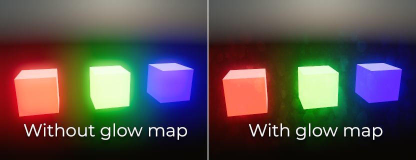
Theo mặc định, glow dùng bộ lọc co giãn bicubic trên nền tảng máy tính và bộ lọc co giãn bilinear trên nền tảng di động. Bộ lọc bicubic cho chất lượng cao hơn và ít bị vỡ khối hơn, nhưng tốn hiệu năng GPU, có thể đáng kể trên card đồ họa tích hợp. Chế độ co giãn có thể được điều khiển bằng cài đặt dự án Rendering > Environment > Glow > Upscale Mode. Cài đặt này chỉ có hiệu lực khi dùng renderer Forward+ hoặc Mobile, vì Compatibility dùng một cách triển khai glow khác.
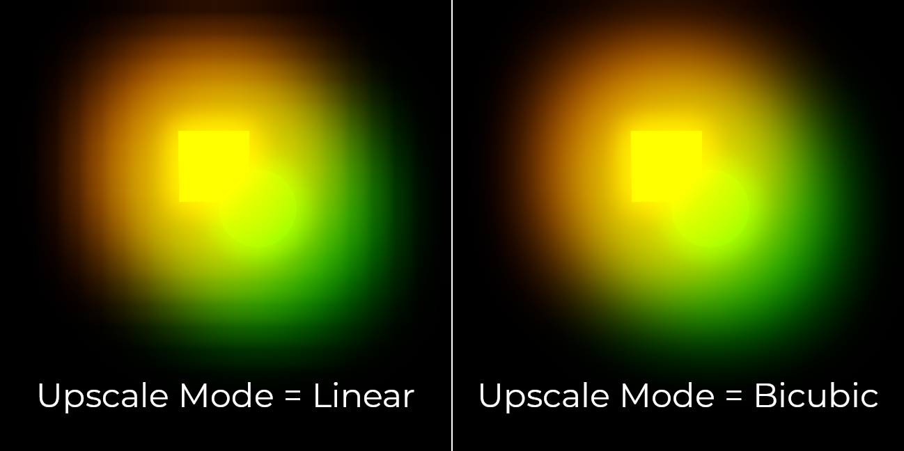
Dùng glow trong 2D
Có 2 cách dùng glow trong 2D:
Kể từ Godot 4.2, bạn có thể bật HDR cho kết xuất 2D khi dùng phương thức kết xuất Forward+ và Mobile. Việc này tốn hiệu năng, nhưng cho phép dải động lớn hơn. Nó cũng cho phép bạn kiểm soát đối tượng nào phát glow thông qua thuộc tính Modulate hoặc Self Modulate riêng của chúng (dùng thanh trượt Intensity trong bộ chọn màu). Bật HDR cũng có thể giảm hiện tượng banding trong đầu ra kết xuất 2D.
Để bật HDR trong 2D, hãy mở Project Settings, bật Rendering > Viewport > HDR 2D rồi khởi động lại trình chỉnh sửa.
Nếu muốn tối đa hóa hiệu năng, bạn có thể để tắt HDR cho kết xuất 2D. Tuy nhiên, bạn sẽ ít kiểm soát hơn việc đối tượng nào phát glow.
Bật glow, đặt chế độ nền của environment thành Canvas rồi giảm Glow HDR Threshold để các pixel không quá sáng vẫn phát glow. Để ngăn các phần tử UI phát glow, hãy đặt chúng làm con của một node class_CanvasLayer. Bạn có thể kiểm soát những layer nào bị glow ảnh hưởng bằng thuộc tính Background > Canvas Max Layer của resource Environment.
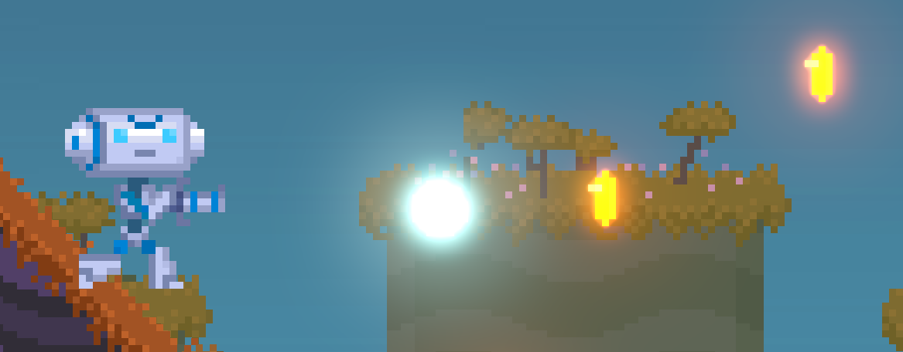
Ví dụ dùng glow trong một scene 2D. HDR 2D được bật, còn các đồng xu và viên đạn có thuộc tính Modulate được tăng lên giá trị quá sáng bằng thanh trượt Intensity trong bộ chọn màu.
Cảnh báo
Renderer 2D kết xuất trong không gian màu tuyến tính nếu cài đặt dự án Rendering > Viewport > HDR 2D được bật, vì vậy cũng phải dùng hint source_color cho các uniform sampler được dùng làm đầu vào màu trong shader canvas_item. Nếu không làm vậy, texture sẽ trông bị bạc màu.
Nếu HDR 2D bị tắt, source_color vẫn sẽ hoạt động đúng trong shader canvas_item, vì vậy bạn nên dùng nó khi phù hợp trong cả hai trường hợp.
Dùng không gian màu tuyến tính cũng có nghĩa là alpha blending sẽ thay đổi. Các sprite có độ mờ đục thấp thường trở nên rõ hơn, và font chữ sẽ trông đậm hơn do các pixel độ mờ đục thấp từ khử răng cưa font trở nên rõ hơn. Điều này cũng ảnh hưởng đến việc kết xuất của chính trình chỉnh sửa.
Dùng glow để làm mờ màn hình
Có thể dùng glow để làm mờ toàn bộ viewport, hữu ích để làm mờ nền khi một menu đang mở. Chỉ phần kết xuất 3D bị ảnh hưởng, trừ khi chế độ nền của environment được đặt thành Canvas. Để ngăn các phần tử UI bị làm mờ khi dùng chế độ nền Canvas, hãy đặt chúng làm con của một node class_CanvasLayer. Bạn có thể kiểm soát những layer nào bị hiệu ứng làm mờ này ảnh hưởng bằng thuộc tính Background > Canvas Max Layer của resource Environment.
Để dùng glow làm giải pháp làm mờ:
Bật Normalized và điều chỉnh các level tùy ý. Tăng các chỉ số level cao hơn sẽ cho hình ảnh mờ hơn. Bạn nên để một level glow duy nhất ở
1.0và để tất cả các level glow khác ở0.0, nhưng điều này không bắt buộc. Lưu ý rằng vẻ ngoài cuối cùng sẽ khác nhau tùy theo độ phân giải viewport.Đặt Intensity thành
1.0và Bloom thành1.0.Đặt blend mode thành Replace và HDR Luminance Cap thành
1.0.
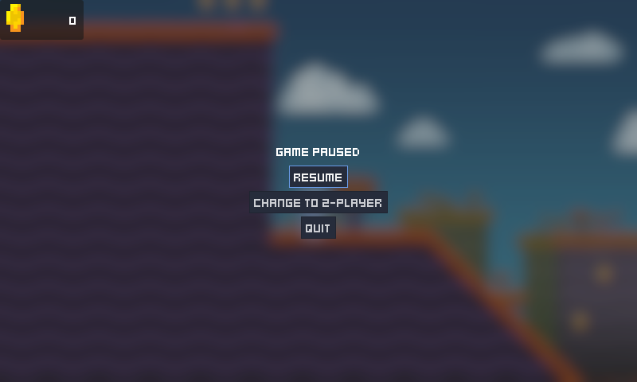
Ví dụ dùng glow để làm mờ phần kết xuất 2D ở nền của menu
Sương mù
Ghi chú
Phần này chỉ đề cập đến sương mù không thể tích (non-volumetric). Có thể dùng đồng thời cả sương mù không thể tích và Sương mù thể tích và fog volume.
Sương mù, giống như ngoài đời thực, khiến các đối tượng ở xa nhạt dần vào một màu đồng nhất. Godot có hai loại sương mù:
Depth Fog: Loại này được áp dụng dựa trên khoảng cách tính từ camera.
Height Fog: Loại này được áp dụng cho mọi đối tượng nằm dưới (hoặc trên) một độ cao nhất định, bất kể khoảng cách tính từ camera.
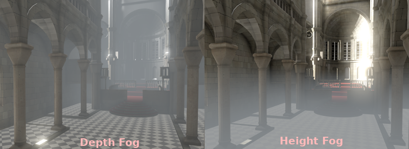
Cả hai loại sương mù này đều có thể tinh chỉnh đường cong, giúp chuyển tiếp sắc nét hơn hoặc mềm hơn.
Có thể tinh chỉnh hai thuộc tính để hiệu ứng sương mù thú vị hơn:
Thứ nhất là Sun Scatter, sử dụng màu và năng lượng của DirectionalLight3D trong scene hiện tại. Khi nhìn về phía đèn định hướng (thường là mặt trời), sương mù sẽ được nhuộm theo màu của đèn để mô phỏng ánh nắng xuyên qua sương mù.
Thứ hai là Aerial Perspective, nhuộm màu sương mù theo màu bầu trời để hòa trộn bầu trời với nền tốt hơn. Giá trị cao hơn sẽ nhuộm nhiều hơn, với 1.0 thay thế hoàn toàn màu sương mù thông thường bằng aerial perspective. Có thể dùng thuộc tính này trong các level thế giới mở rộng lớn để tạo cảm giác chiều sâu tốt hơn, hoặc để tránh sự gián đoạn màu giữa bầu trời và sương mù.
Nếu cả Sun Scatter và Aerial Perspective đều lớn hơn 0.0, tán xạ mặt trời sẽ được áp dụng chồng lên aerial perspective.
Ghi chú
Sương mù có thể gây hiện tượng banding trên viewport, đặc biệt ở mật độ cao. Xem Hiện tượng phân dải màu (color banding) để biết cách giảm banding.
Sương mù thể tích
Sương mù thể tích mang lại hiệu ứng sương mù chân thực cho scene, với màu sương mù chịu ảnh hưởng của các nguồn sáng đi xuyên qua nó.
Xem thêm
Xem Sương mù thể tích và fog volume để biết tài liệu về cách thiết lập sương mù thể tích.
Điều chỉnh
Ở cuối quá trình xử lý, Godot cho phép thực hiện một số điều chỉnh hình ảnh tiêu chuẩn.
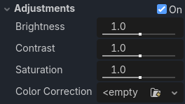
Điều chỉnh BCS cơ bản
Điều chỉnh đầu tiên là khả năng thay đổi các thuộc tính quen thuộc Brightness, Contrast và Saturation:
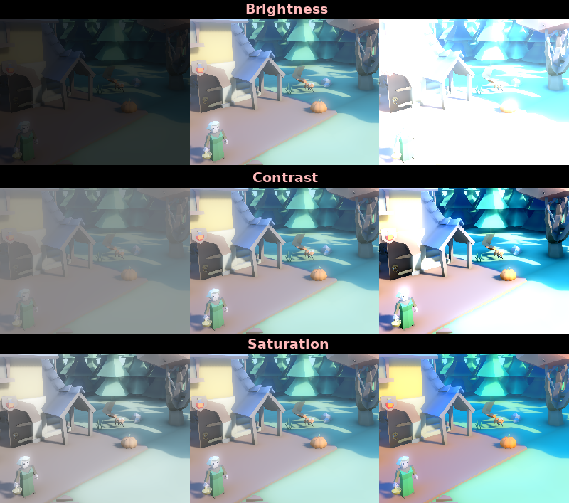
Hiệu chỉnh màu bằng gradient 1D
Điều chỉnh thứ hai là cung cấp một gradient hiệu chỉnh màu. Có thể làm điều này bằng cách gán một resource GradientTexture1D cho thuộc tính Color Correction, hoặc bằng cách nạp một texture chứa gradient ngang. Phần ngoài cùng bên trái của gradient đại diện cho màu đen trong ảnh nguồn, còn phần ngoài cùng bên phải đại diện cho màu trắng trong ảnh nguồn.
Một gradient tuyến tính từ đen sang trắng như dưới đây sẽ không tạo ra hiệu ứng nào:
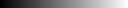
Nhưng tạo các gradient tùy chỉnh sẽ cho phép ánh xạ từng kênh sang một màu khác:
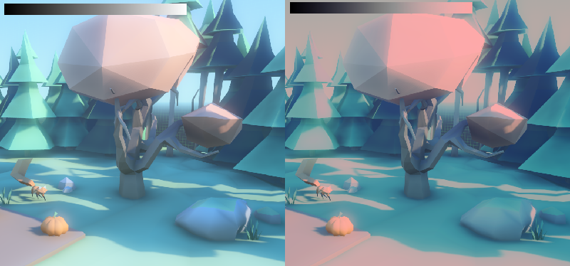
Hiệu chỉnh màu bằng LUT 3D
Cũng có thể dùng texture tra cứu (look-up texture, LUT) 3D để hiệu chỉnh màu. Đây là một texture đặc biệt dùng để chỉnh sửa từng kênh màu riêng biệt với nhau (đỏ, lục, lam). Ảnh này có thể có độ phân giải bất kỳ, nhưng vì hiệu chỉnh màu là dữ liệu tần số thấp, bạn nên dùng độ phân giải thấp vì lý do hiệu năng. Độ phân giải của texture LUT thường là 17×17×17, 33×33×33, 51×51×51 hoặc 65×65×65 (kích thước lẻ cho phép nội suy tốt hơn).
Để cách này hoạt động, chế độ import của texture tra cứu phải được đặt thành Texture3D trong Import dock (thay vì được import như một Texture2D thông thường):
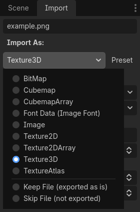
Hãy chắc chắn rằng bạn cũng cấu hình số lát cắt ngang và dọc để import. Nếu không làm vậy, texture LUT sẽ không tác động đúng lên viewport khi được dùng. Bạn có thể xem trước texture 3D đã được import như thế nào bằng cách nhấp đúp vào nó trong FileSystem dock, rồi vào Inspector để lật qua các layer của texture.
Bạn có thể dùng mẫu LUT trung tính 33×33×33 này làm cơ sở (nhấp chuột phải và chọn Save as…):
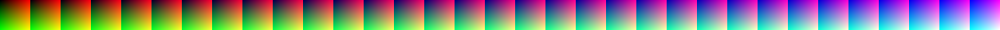
Với mẫu LUT ở trên, sau khi đổi chế độ import của nó thành Texture3D, hãy đặt số lát cắt Horizontal thành 33 trong Import dock rồi nhấp Reimport. Nếu bạn nạp LUT này vào thuộc tính Color Correction, hiện tại bạn sẽ không thấy khác biệt nào vì texture này được thiết kế làm điểm khởi đầu trung tính.
Mẫu LUT này có thể được chỉnh sửa trong một trình chỉnh sửa ảnh để mang lại tâm trạng khác cho hình ảnh. Một quy trình phổ biến là đặt ảnh LUT cạnh ảnh chụp màn hình viewport 3D của dự án, rồi dùng trình chỉnh sửa ảnh để chỉnh sửa đồng thời cả ảnh LUT lẫn ảnh chụp màn hình. Sau đó có thể lưu LUT và áp dụng vào game engine để thực hiện cùng phép hiệu chỉnh màu đó theo thời gian thực.
Ví dụ, chỉnh sửa mẫu LUT trong một trình chỉnh sửa ảnh để tạo vẻ "sepia" sẽ cho ra hình ảnh bên phải:
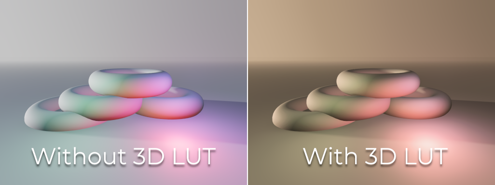
Ghi chú
Các điều chỉnh và hiệu chỉnh màu được áp dụng sau tonemapping. Điều này có nghĩa là các thuộc tính tonemapping đã định nghĩa ở trên vẫn có tác dụng khi bật điều chỉnh.
Tùy chọn thuộc tính camera
Godot có hai loại thuộc tính camera: physical (vật lý) và practical (thực dụng). Khi dùng CameraAttributesPhysical thay vì CameraAttributesPractical, độ sâu trường ảnh được tính tự động từ khoảng cách lấy nét, tiêu cự và khẩu độ của thuộc tính camera. Ngoài ra, các tùy chọn Frustum cũng khả dụng.
Độ sâu trường ảnh / Làm mờ xa
Hiệu ứng này mô phỏng khoảng cách lấy nét trên camera. Nó làm mờ các đối tượng phía sau một phạm vi nhất định. Nó có một Distance ban đầu cùng với vùng Transition (tính bằng đơn vị thế giới):
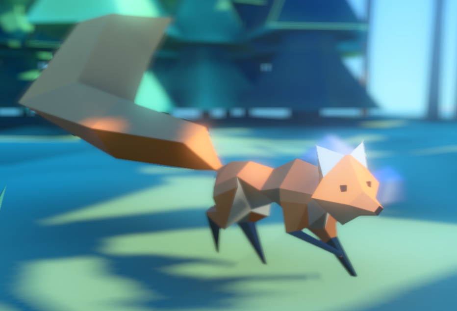
Tham số Amount điều khiển mức độ làm mờ. Với mức làm mờ lớn hơn, có thể cần tinh chỉnh chất lượng độ sâu trường ảnh trong cài đặt dự án nâng cao để tránh lỗi hình ảnh.
Độ sâu trường ảnh / Làm mờ gần
Hiệu ứng này mô phỏng khoảng cách lấy nét trên camera. Nó làm mờ các đối tượng ở gần camera (tác động theo hướng ngược lại với làm mờ xa). Nó có một Distance ban đầu cùng với vùng Transition (tính bằng đơn vị thế giới):
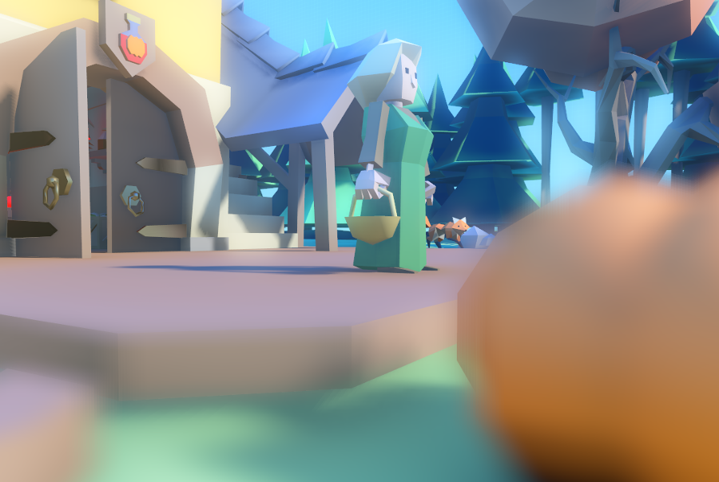
Tham số Amount điều khiển mức độ làm mờ. Với mức làm mờ lớn hơn, có thể cần tinh chỉnh chất lượng độ sâu trường ảnh trong cài đặt dự án nâng cao để tránh lỗi hình ảnh.
Người ta thường dùng cả hai loại làm mờ cùng nhau để hướng sự chú ý của người xem vào một đối tượng nhất định, hoặc tạo ra cái gọi là hiệu ứng "tilt shift".
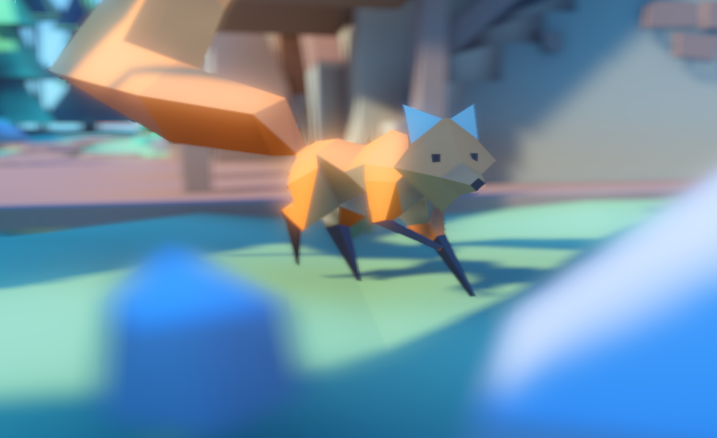
Độ phơi sáng
Giá trị này nhân với độ sáng tổng thể của scene nhìn thấy từ camera. Giá trị cao hơn cho scene trông sáng hơn.
Phơi sáng tự động
Tính năng này chỉ khả dụng khi dùng trình kết xuất Forward+, không có trên Mobile hoặc Compatibility.
Dù trong hầu hết trường hợp, chiếu sáng và texture phần lớn do họa sĩ kiểm soát, Godot vẫn hỗ trợ một cách triển khai dải động cao (HDR) cơ bản với cơ chế phơi sáng tự động. Cơ chế này thường được dùng để tăng tính chân thực khi kết hợp khu vực trong nhà thiếu sáng với khu vực ngoài trời sáng. Phơi sáng tự động mô phỏng camera (hoặc mắt) cố gắng thích nghi giữa những nơi sáng và tối cùng lượng ánh sáng khác nhau của chúng.
Ghi chú
Phơi sáng tự động cần đánh giá độ sáng của scene mỗi frame, việc này có chi phí hiệu năng vừa phải. Vì vậy, bạn nên để tắt Auto Exposure nếu nó không tạo ra nhiều khác biệt trong scene của bạn.
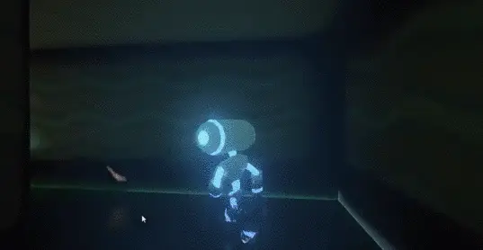
Cách đơn giản nhất để dùng phơi sáng tự động là đảm bảo các đèn ngoài trời (hoặc các đèn mạnh khác) có năng lượng vượt quá 1.0. Việc này được thực hiện bằng cách tinh chỉnh hệ số nhân Energy của chúng (trên chính Light). Để nhất quán, Sky thường cũng cần dùng hệ số nhân năng lượng để khớp với đèn định hướng. Thông thường, các giá trị từ 3.0 đến 6.0 là đủ để mô phỏng điều kiện trong nhà-ngoài trời.
Khi kết hợp Auto Exposure với hậu xử lý Glow (phát quang), các pixel vượt quá White của tonemap sẽ loang sang glow buffer, tạo ra hiệu ứng bloom điển hình trong nhiếp ảnh.
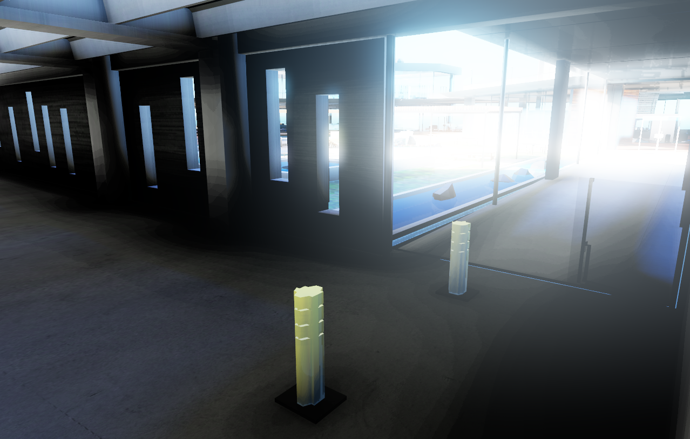
Các giá trị người dùng có thể điều khiển trong mục Auto Exposure đi kèm các giá trị mặc định hợp lý, nhưng bạn vẫn có thể tinh chỉnh chúng:
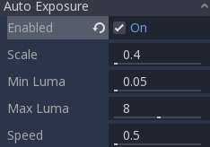
Scale: Giá trị để co giãn chiếu sáng. Giá trị cao hơn cho hình ảnh sáng hơn, giá trị thấp hơn cho hình ảnh tối hơn.
Min Sensitivity / Min Exposure Value: Độ chói tối thiểu mà phơi sáng tự động sẽ nhắm tới để điều chỉnh (tính bằng ISO khi dùng CameraAttributesPractical, hoặc EV100 khi dùng CameraAttributesPhysical). Độ chói là trung bình ánh sáng của tất cả pixel trên màn hình.
Max Sensitivity / Max Exposure Value: Độ chói tối đa mà phơi sáng tự động sẽ nhắm tới để điều chỉnh (tính bằng ISO khi dùng CameraAttributesPractical, hoặc EV100 khi dùng CameraAttributesPhysical).
Speed: Tốc độ mà độ chói tự hiệu chỉnh. Giá trị càng cao thì hiệu chỉnh độ chói diễn ra càng nhanh. Giá trị cao có thể phù hợp hơn với game nhịp độ nhanh, nhưng có thể gây mất tập trung trong một số tình huống.
Khi dùng CameraAttributesPractical, phơi sáng được đặt bằng độ nhạy tính theo ISO thay vì giá trị phơi sáng EV100. Các giá trị ISO điển hình nằm trong khoảng 50 đến 3200, giá trị cao hơn cho phơi sáng cuối cùng cao hơn. Ngoài đời thực, nhiếp ảnh ban ngày thường dùng ISO trong khoảng 100 đến 800.
Xem thêm
Xem Đơn vị vật lý cho ánh sáng và camera nếu bạn muốn dùng đơn vị ngoài đời thực để cấu hình phơi sáng, trường nhìn và độ sâu trường ảnh của camera.